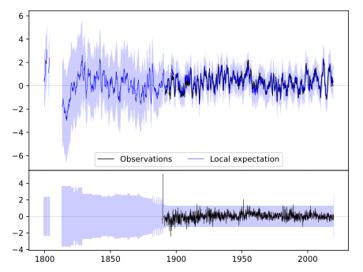
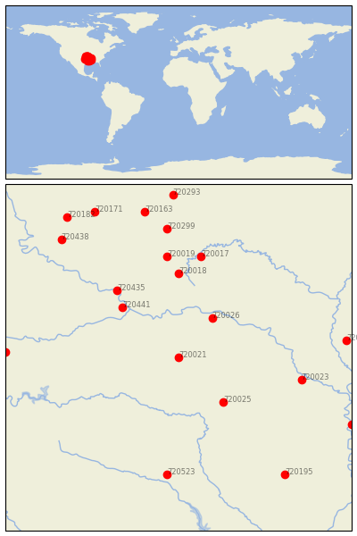
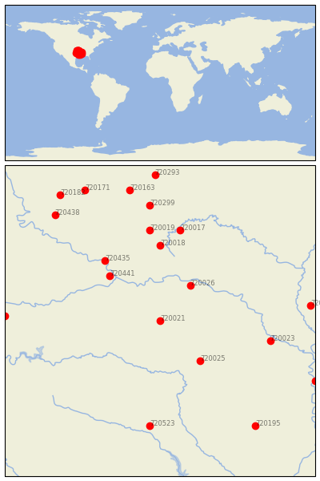

MENA [USA]

 
| Neighbour | Name | Country | Distance | Lon/Lat | Years |
|---|
| 720021 | MENA | USA | 0 | -94.2, 34.6 | 1889-2019 |
| 720026 | SUBIACO | USA | 95 | -93.6, 35.3 | 1884-2019 |
| 720025 | PRESCOTT 2 NNW | USA | 115 | -93.4, 33.8 | 1882-2019 |
| 720441 | WEBBERS FALLS 5 WSW | USA | 135 | -95.2, 35.5 | 1892-2019 |
| 720435 | MUSKOGEE | USA | 166 | -95.3, 35.8 | 1892-2019 |
| 720018 | FAYETTEVILLE EXP STN | USA | 166 | -94.2, 36.1 | 1881-2019 |
| 720019 | GRAVETTE | USA | 200 | -94.4, 36.4 | 1892-2019 |
| 720017 | EUREKA SPRINGS 3 WNW | USA | 203 | -93.8, 36.4 | 1888-2019 |
| 720023 | PINE BLUFF | USA | 206 | -92.0, 34.2 | 1883-2019 |
| 720523 | MARSHALL | USA | 234 | -94.4, 32.5 | 1893-2019 |
| 720299 | NEOSHO | USA | 256 | -94.4, 36.9 | 1878-2019 |
| 720014 | BRINKLEY | USA | 276 | -91.2, 34.9 | 1883-2019 |
| 720437 | PAULS VALLEY 4 WSW | USA | 283 | -97.3, 34.7 | 1892-2019 |
| 720195 | CALHOUN RSCH STN | USA | 292 | -92.3, 32.5 | 1888-2019 |
| 720163 | COLUMBUS | USA | 294 | -94.8, 37.2 | 1891-2019 |
| 720438 | PAWHUSKA | USA | 300 | -96.3, 36.7 | 1893-2019 |
| 720277 | GREENVILLE | USA | 315 | -91.1, 33.4 | 1884-2019 |
| 720171 | INDEPENDENCE | USA | 319 | -95.7, 37.2 | 1872-2019 |
| 720293 | LAMAR | USA | 322 | -94.3, 37.5 | 1885-2019 |
| 720182 | SEDAN | USA | 331 | -96.2, 37.1 | 1885-2019 |